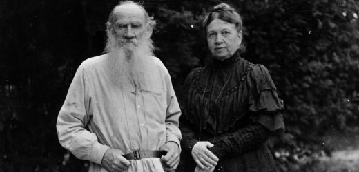

Was im April im Literaturcafé so großen Erfolg hatte, soll auf Wunsch der Zuhörer am
fortgesetzt werden.
Dörte Ellerbrock und Dieter Wehrbrink lesen mit verteilten Rollen die zweite Hälfte des Briefwechsels von Sofia und Leonid Tolstoi.
Im Foyer des Kulturhauses Süderelbe
Am Johannisland 2
21147 Hamburg
Barrierefrei mit dem Fahrstuhl zu erreichen. Der Eintritt ist frei!